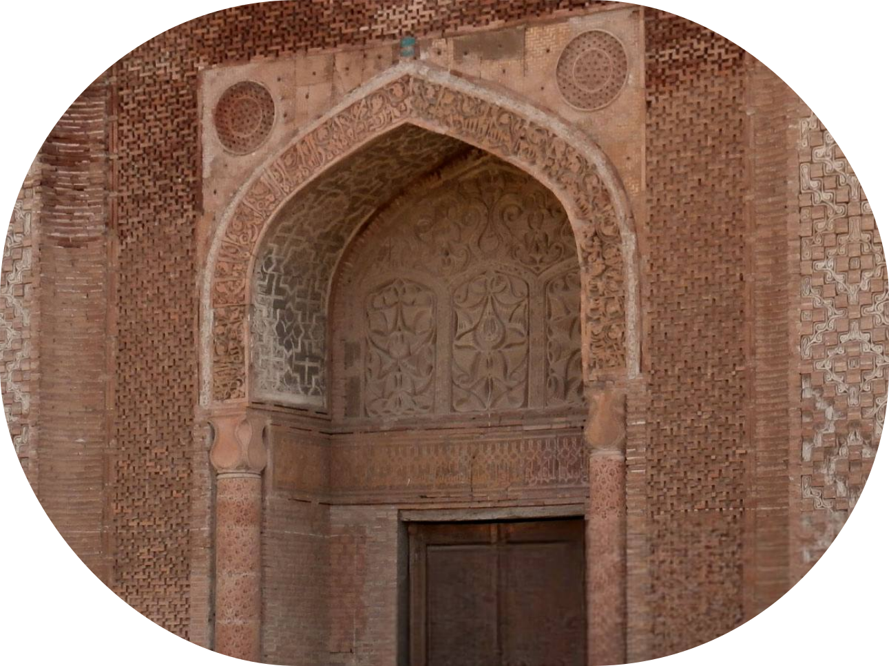

Өзгөн
Өзгөн архитектуралык комплексинин тарыхы
Өзгөн архитектуралык комплекси Кыргызстандын эң байыркы эстеликтеринин бири, Ош облусунун Өзгөн шаарында жайгашкан. Комплекске 11-12-кылымдарда Караханиддер мамлекетинин тушунда курулган үч күмбөз жана мунара кирет. Бул курулуштар башкаруучулардын мүрзөлөрү жана ошол мезгилде Улуу Жибек жолундагы маанилүү соода жана административдик борбор болгон шаардын диний борбору катары кызмат кылган.
Өзгөндүн жаралышы жана гүлдөшү
Өзгөн шаары байыркы доорлордон бери белгилүү жана Кушан падышалыгынын доорунда (биздин замандын 1–3-кылымдары) негизделген. Бирок ал өзүнүн эң чоң гүлдөп-өсүшүнө 11-12-кылымдарда Караханиддер династиясынын бийлиги астында турганда жеткен. Бул мезгилде Өзгөн Баласагундан кийинки экинчи маанилүү борбордун ролун аткарып, мамлекеттин негизги шаарларынын бирине айланган. Мына ошондон кийин бул жерде диний жана административдик имараттар, анын ичинде күмбөздөр жана мунаралар активдүү курула баштаган, алар бүгүнкү күнгө чейин сакталып калган.
Караханиддердин күмбөздөрү
Өзгөн комплексинин күмбөздөрү башкаруучу Караханиддер династиясынын өкүлдөрүн көмүү үчүн курулган. Алар бир катарда жайгашып, оюлган кирпичтен жана терракотадан жасалган бай декоративдик жасалгасы менен өзгөчө архитектурасы менен айырмаланат.
- Центральный мавзолей (построен в начале XI века) – считается Борбордук күмбөз (11-кылымдын башында курулган) үчөөнүн эң эскиси болуп эсептелет. Анын күмбөзү жана порталы минималдуу оймо-чиймелер менен катуу формаларда жасалган, бул Караханиддердин архитектурасынын алгачкы доорун көрсөтүп турат.
- Түндүк мавзолейи (11-кылымдын аягы) татаал геометриялык жана гүлдүү оймо-чиймелер менен кооздолгон, фасады оймо-чийме таш менен бай кооздолгон.
- Түштүк күмбөзү (12-кылым) кийинки ислам архитектуралык салттарынын таасирин көрсөткөн эң акыркы жана эң кооздолгон мавзолей.
Күмбөздөр бышкан кирпичтен курулуп, Борбордук Азия менен Перс архитектурасынын элементтерин айкалыштырган өзгөчө стилге ээ.

Өзгөн мунарасы
Мунара күмбөздөр менен бир убакта курулуп, белги мунарасы жана азан чакыруучу жай катары колдонулган. Алгач анын бийиктиги 45 метрге жакын болсо, жер титирөөлөрдүн жана кыйроонун натыйжасында 27,5 метрге чейин кыскарган. Мунаранын негизи таштан, үстүнкү бөлүгү кыштан оюлуп жасалган оймо-чиймелүү декоративдик курлар менен курулган. Ичинде шаардын панорамалык көрүнүшү бар чокуга чыгуучу спираль тепкич бар.
Кийинки кылымдардагы комплекстин тагдыры
13-кылымда Караханиддер кулагандан кийин Өзгөндүн мааниси акырындап төмөндөп, архитектуралык комплекстин өзү жараксыз абалга келген. Тимуриддердин жана Кокон хандыгынын тушунда имараттардын айрым элементтери жарым-жартылай калыбына келтирилген, бирок жалпысынан алар эскилиги жеткен абалда калган.
20-кылымда уникалдуу тарыхый мурасты сактоого багытталган реставрация иштери башталган. 1923-жылы Өзгөн комплекси мамлекеттик коргоого алынып, 1970-жылдары чоң масштабдагы калыбына келтирүү иштери жүргүзүлүп, аман калган имараттар бекемделген.
Заманбап мааниси
Бүгүнкү күндө Өзгөн архитектуралык комплекси Кыргызстандын негизги тарыхый эстеликтеринин бири болуп саналат жана коргоого алынган маданий мурас объектилеринин тизмесине киргизилген. Караханиддер доорунун бай мурастары менен таанышууну каалаган изилдөөчүлөрдү, тарыхчыларды жана туристтерди өзүнө тартат. Комплекс маданий жана диний иш-чаралар үчүн да колдонулат, кылымдар өткөндөн кийин да өз маанисин сактап келет.
Ошентип, Өзгөн архитектуралык комплекси тарыхый эстелик гана болбостон, Караханиддердин улуулугунун, алардын архитектуралык чеберчилигинин жана жаңы муундарды шыктандырып келе жаткан маданий мурастарынын күбөсү.
Так жайгашкан жери:
Координаттары: 40.7700° N, 73.2986° E
Бишкектен унаа менен баруу убактысы: болжол менен 8-9 саат (болжол менен 600 км).
Ошко учуп (болжол менен 1 саат), андан ары Өзгөнгө (55 км, машина менен 1 саатка жакын) айдаса болот.